2026년 9월 새학기
방과후 모집을 시작합니다 🍂
새학기가 시작되면 부모님의 하루도 다시 바빠집니다. 하교 시간에 맞춘 픽업, 안전한 돌봄, 간식, 숙제, 그리고 아이의 학습까지—따로따로 고민하지 않도록 JC After School이 한 곳에서 함께 챙깁니다.

🚌 픽업부터 성적까지 한 곳에서 이어지는 방과후
JC의 방과후는 아이가 학교 문을 나서는 순간부터 시작됩니다. 안전하게 픽업하고, 선생님이 함께하는 공간에서 쉬고 먹고 숙제하며, 필요한 과목은 놓치지 않도록 학습까지 이어갑니다.
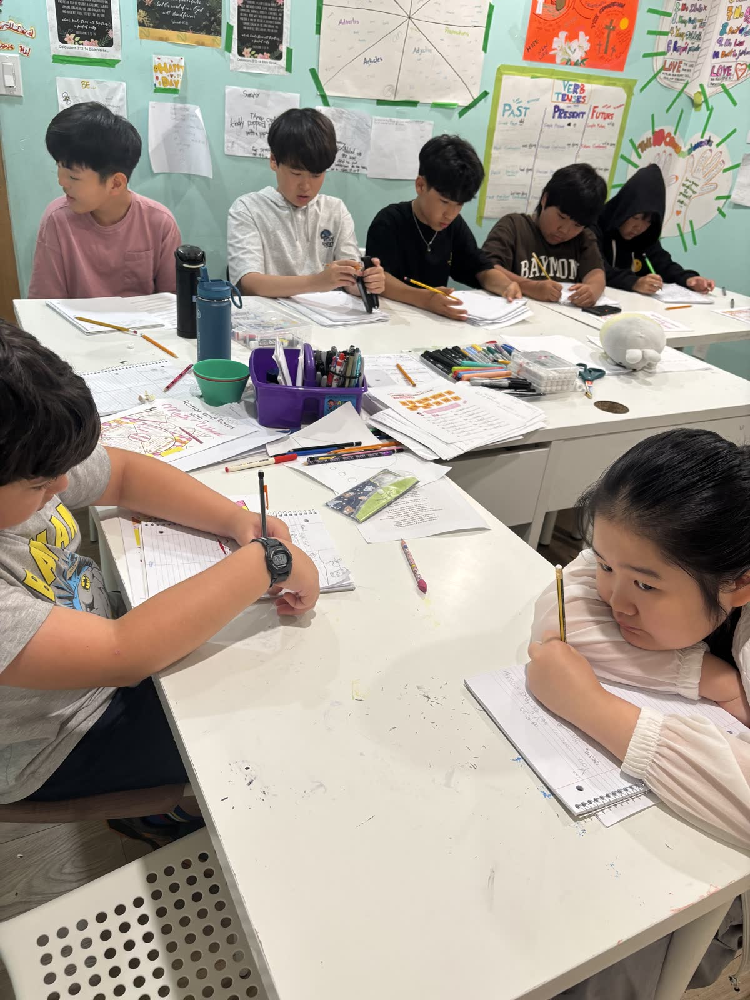
🍪 간식은 매일, 무료로 제공합니다 별도 비용 없이
학교를 마치고 온 아이는 배가 고픕니다. 배가 고픈 채로는 숙제도 학습도 되지 않습니다. 그래서 JC는 매일 간식을 준비하고, 별도 비용을 받지 않습니다. 간식비 명목의 추가 청구도 없습니다.
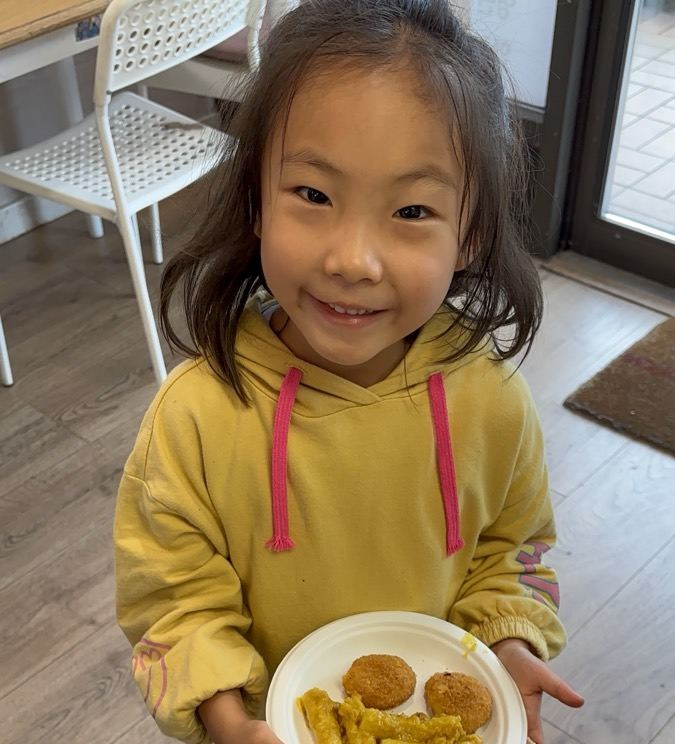
과자 한 봉지로 때우지 않습니다. 과일·시리얼·구운 간식·따뜻한 간식을 그날그날 바꿔 가며 준비하고, 아이들이 자리에 앉아 편하게 먹을 수 있게 합니다.
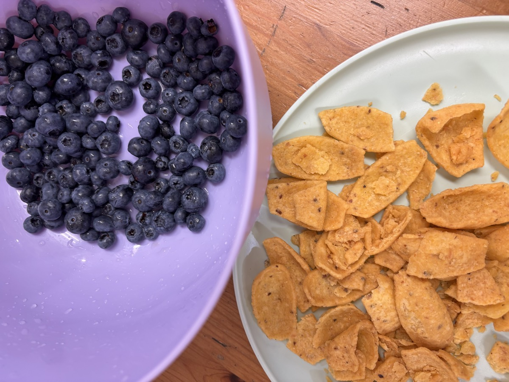
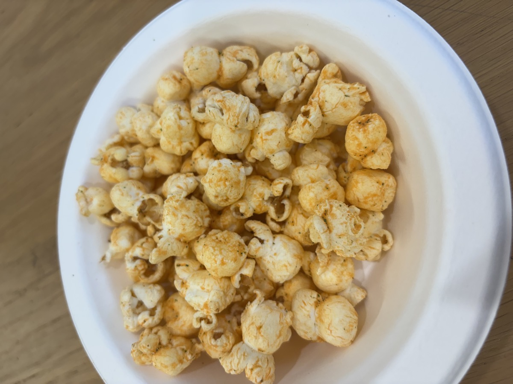
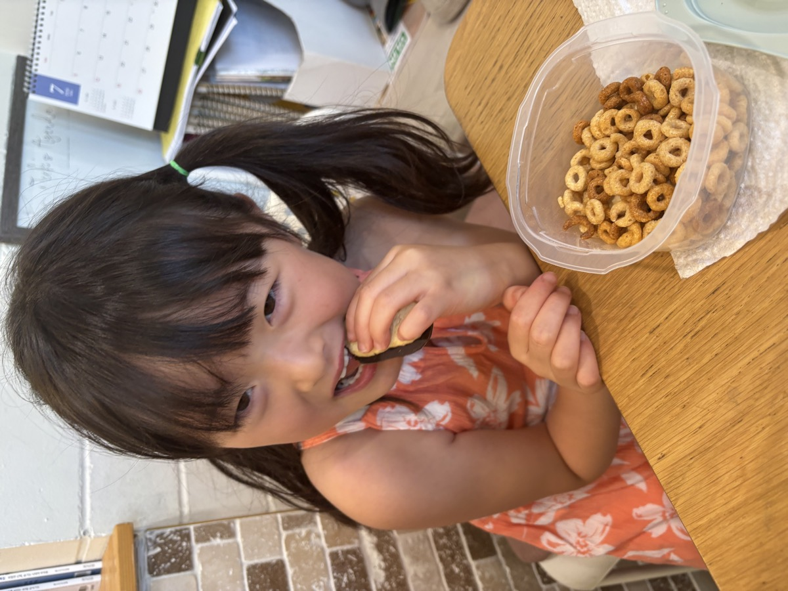
🥜 땅콩·견과류는 일절 사용하지 않습니다. 알러지가 있는 아이는 등록 상담 때 꼭 알려 주세요. 간식과 식단을 따로 챙기고, 필요하면 가정에서 보내주신 간식으로 대체합니다.
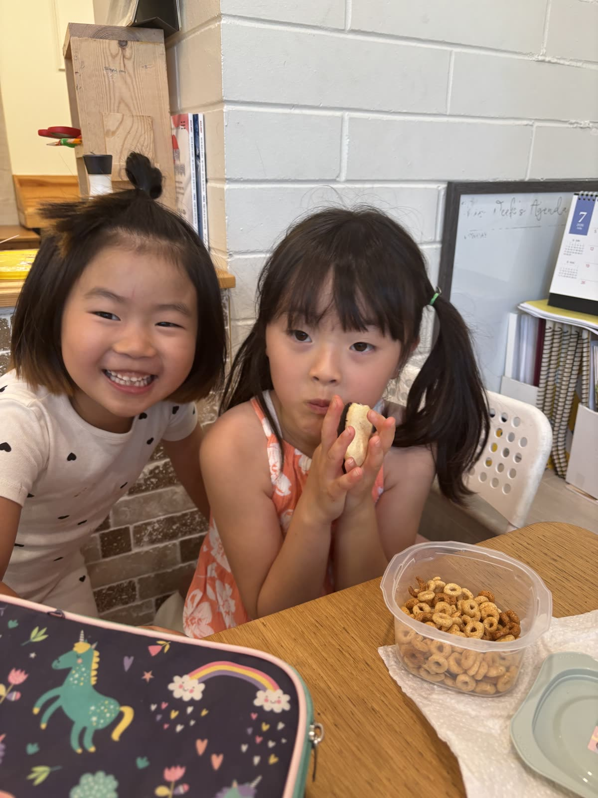
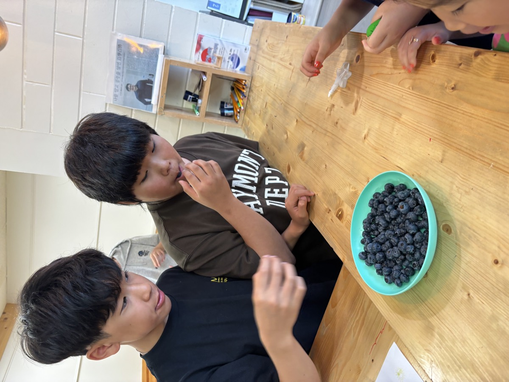
📚 돌봄에서 끝나지 않습니다 매일 조금씩 쌓는 학습
아이를 안전하게 데리고 있는 것까지가 방과후의 절반입니다. 나머지 절반은 그 시간에 무엇을 하느냐입니다. JC는 간식 이후의 시간을 숙제와 학습으로 채웁니다. 숙제를 먼저 끝내고, 남는 시간에 부족한 과목을 보완합니다.
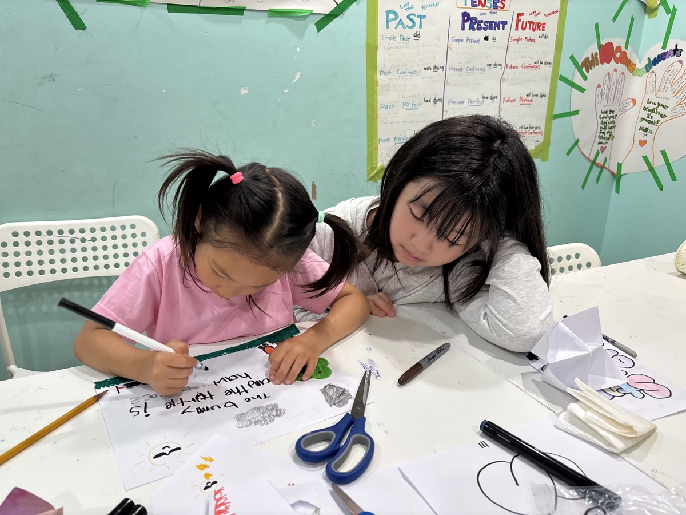
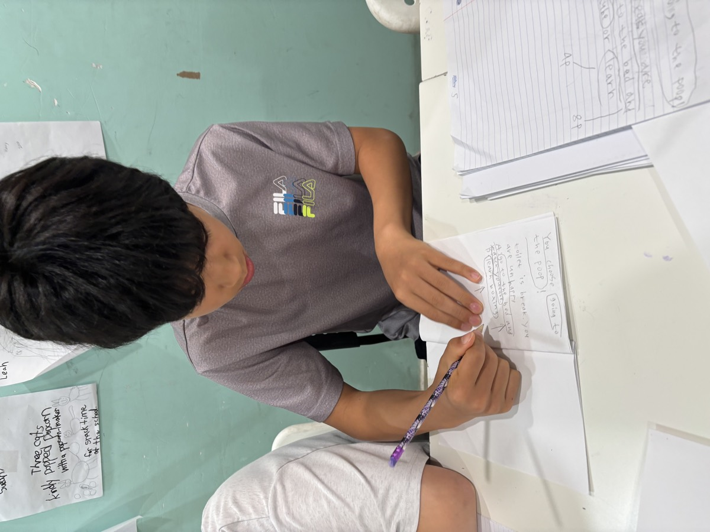
학년 폭이 넓은 것도 JC의 강점입니다. Kinder–Grade 7 방과후와 Grade 7–12 수학·과학·영어가 같은 공간에서 이어지기 때문에, 아이가 학년이 올라가도 학원을 새로 찾지 않아도 됩니다.
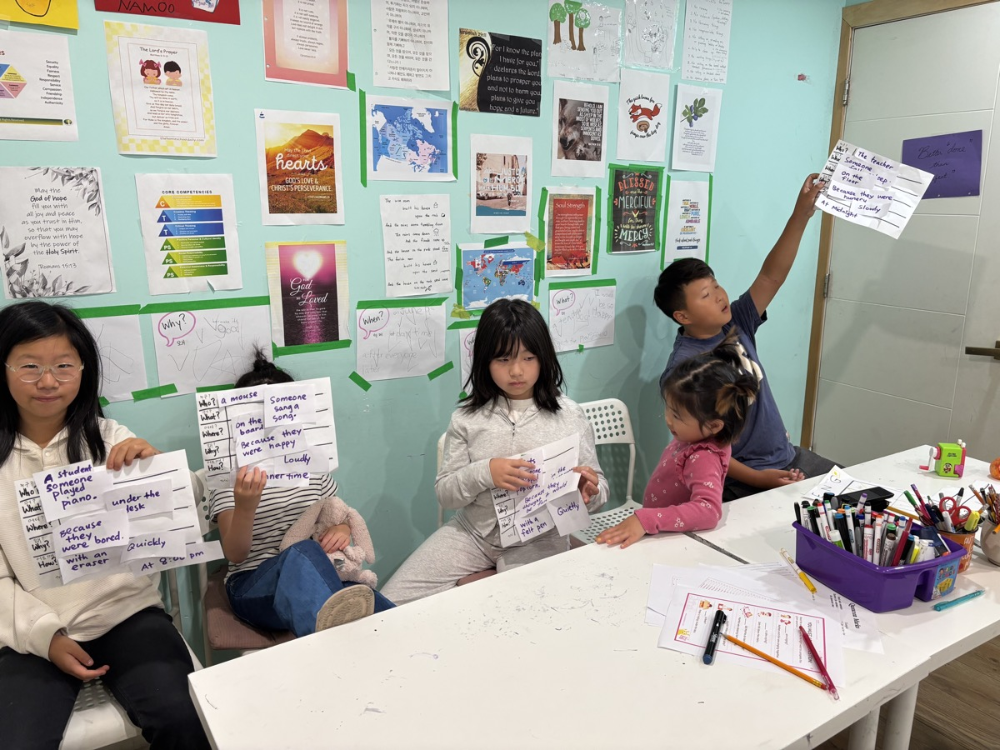
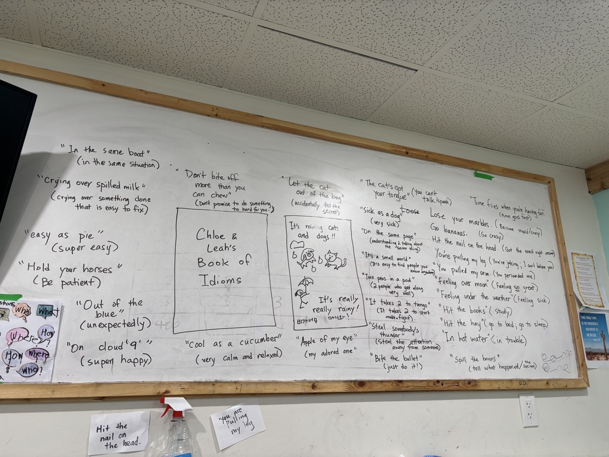
아이의 방과후, 이렇게 이어집니다
Kinder–Grade 7 학생의 하교 동선을 상담하고, 방과후 센터까지 안전하게 이동합니다. (Tri-City 전지역 + Surrey)
매일 준비되는 간식을 별도 비용 없이 제공합니다. 숨을 돌리고 에너지를 채운 뒤 차분하게 다음 활동을 시작합니다.
숙제를 미루지 않도록 곁에서 살피고, 스스로 계획하고 마무리하는 습관을 키웁니다.
아이의 학년과 현재 수준에 맞춰 부족한 부분을 보완하고 학교 공부의 자신감을 쌓습니다.
👨👩👧 이런 가정에 잘 맞습니다
하교 시간과 퇴근 시간 사이가 늘 걱정되는 가정, 픽업과 학원을 따로 조율하기 어려운 가정, 아이가 숙제와 학습을 안정적으로 마치고 귀가하기를 바라는 가정에 꼭 맞는 프로그램입니다.
돌봄만 하는 방과후가 아닙니다.
아이에게는 편안한 두 번째 공간이 되고, 부모님에게는 안심할 수 있는 하교 이후의 루틴이 되며, 매일의 작은 학습이 쌓여 학교 공부의 힘으로 이어지도록 돕습니다.
📍 9월 등록 상담 안내
픽업 가능 여부와 아이에게 맞는 프로그램은 학교·학년·필요 과목에 따라 상담 후 안내드립니다. 새학기 일정이 정해지기 전에 미리 문의하시면 더 여유 있게 준비할 수 있습니다.
상담 시 알려주세요: 자녀 학년 · 학교명 · 필요한 픽업 요일 · 관심 과목(수학·과학·영어) · 원하는 시작일
처음 방문하는 가정은 무료 체험으로 센터 분위기와 수업 방식을 먼저 확인할 수 있습니다. 궁금한 점은 카카오톡이나 전화로 편하게 문의해 주세요.
※ 이 페이지의 사진은 모두 코퀴틀람 JC 센터에서 촬영한 실제 수업·간식 모습입니다. (2026 여름캠프 및 수업 현장)
인스타그램 모집 안내: @jc_afterschool 게시물 보기 →